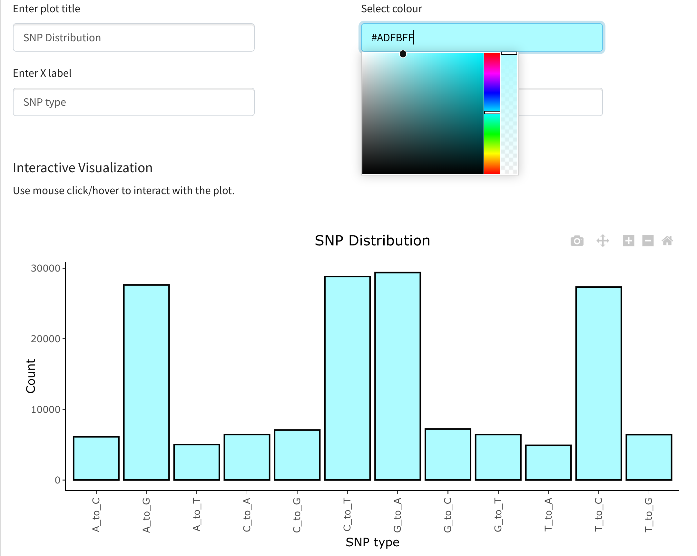
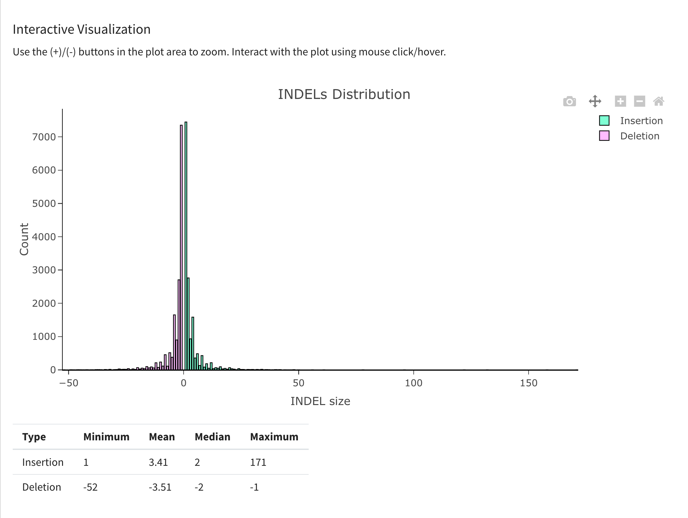
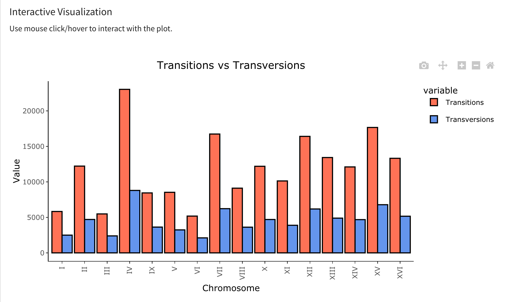
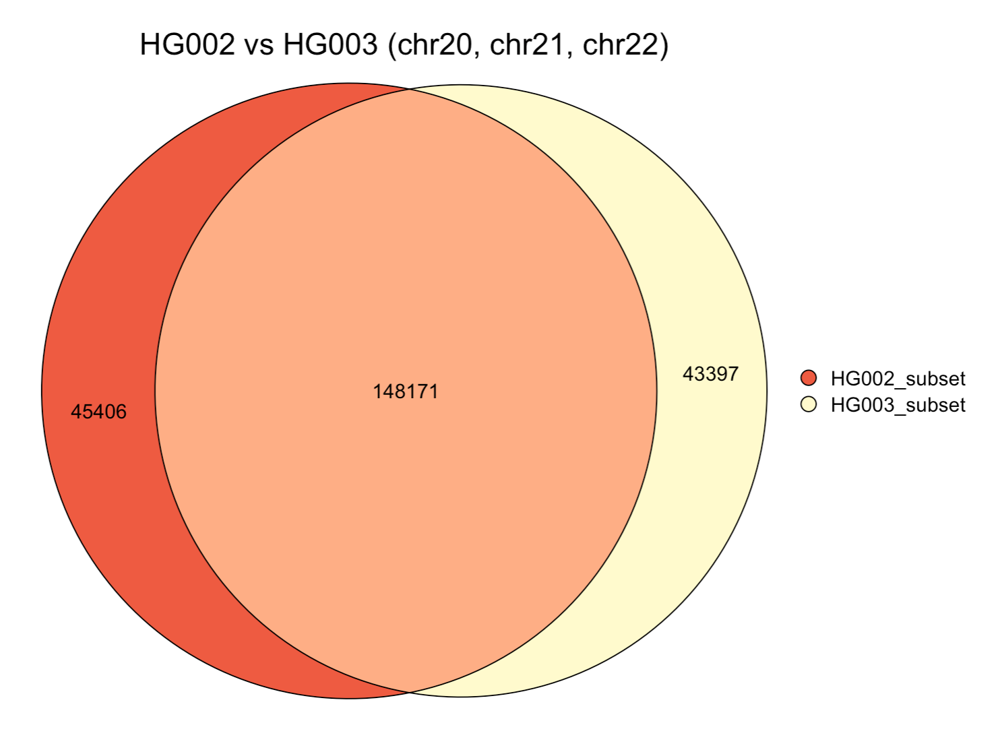

Gallery
Customize plots to your liking

Interact with the plots: hover, zoom, pane, select input, change labels etc.


Visualize occurance of variants in genomic ranges

Get an overall view of the summary statistics

Compare the summary statistics

Compare entire VCF files 